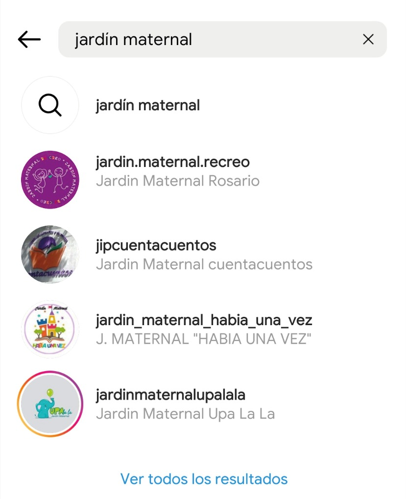

Community Manager
Hola Soy Paloma

¡Holis! Me llamo Paloma, tengo 19 años y soy de Argentina.
Me apasionan las redes y todo el mundo creativo y visual.
Estudio marketing desde los 17, pero desde antes tengo una vocación grande por el dibujo, el diseño y la edición
También consumo mucho contenido en inglés. Veo series, pelis, y escucho música en inglés de manera frecuente.
Soy una persona resolutiva, calmada. Me gusta mantener la paz en los conflictos y me considero muy servicial al momento de trabajar. Disfruto de aportar ideas nuevas y disruptivas.
Amo los gatos. ♥
Marketing tradicional e investigacion de mercado
Creaciones de estrategias de marketing digital y publicidad.
Nociones centrales del marketing de contenidos Creación de contenido de valor para RRSS.
Redacción de textos persuasivos para una marca o emprendimiento. Escritura creativa y persuasiva.
Nociones centrales sobre el color, la forma, las leyes de percepción de la Gestalt y el uso de tipografía. Creación de un brandbook.
En las próximas páginas contaré algunos proyectos en los que trabajé
Jardín para niños entre 0 y 7 años.
Se realizan propuestas lúdicas y juegos que estimulen el desarrollo libre de los niños.
Buscamos realizar una comunicación colorida, divertida y dulce.
En las historias respondemos las preguntas principales sobre el jardín y en el feed mostramos y educamos sobre las actividades que se realizan en él.
Logramos un crecimiento en likes importante ya que anteriormente el promedio era de 10 likes, o menos. Luego de crear la estrategia pudimos crecer a publicaciones de 50 likes orgánicos.
Si en la ciudad de Rosario se busca jardines maternales el primero en la lista es Re-Creo. Esto tiene un peso escencial en el posicionamiento.
Inmobiliaria rosariona con más de 30 años de trayectoria.
Se dedica a la venta, alquiler, tasación y desarrollo de propiedades.
Optamos por un balance entre la comunicación confiable y divertida sin ser demasiado informal.
Logramos subir el número de consultas de 1 cada 2 meses a 3 por día.
El primer Reel subido logró un alcance de 15 mil personas y +400 likes. Resultados impresionantes teniendo en cuenta que el promedio de likes p/publicación era de 15.